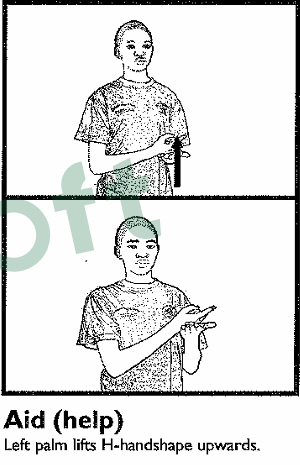

Everyone deserves to be understood
Words are only
the beginning.
Discover sign languages, one sign at a time. Explore real dictionary images, practise with a text translator, and turn typed or spoken words into an animated signing guide.

Your everyday sign finder
Look up a word.
See the sign.
Search the Zimbabwean Sign Language photo dictionary. Type a word or phrase to find its sign image.
A word is enough to get started. No account needed.
Your matching sign images will appear here.
Looking for the full reference? Browse the Zimbabwean Sign Language dictionary PDF
Choose your way in
Explore. Practise.
Connect.
Start with Zimbabwean Sign Language, or explore the other alphabet-based learning tools in this project.
Video to text
Use a compatible sign-recognition model with your camera to transcribe signs, then find ZSL-first dictionary references.
Open camera tool 01 / VOICEVoice to sign video
Type or speak a phrase and play an animated signing guide, using dictionary references and fingerspelling when needed.
Open sign player 02 / ZSLZimbabwean Sign Language
Type or speak English, then look up word-level photos from the Zimbabwean Sign Language dictionary.
Open translator 03 / ASLAmerican Sign Language
Practise spelling words with the American alphabet handshapes.
Explore ASL 04 / BSLBritish Sign Language
Explore fingerspelling with the British Sign Language alphabet.
Explore BSLSign languages are distinct, living languages—not word-for-word versions of spoken languages. These tools are learning aids, not a substitute for fluent signers or qualified interpreters. Video-to-text camera transcription requires an explicitly configured sign-language recognition model.